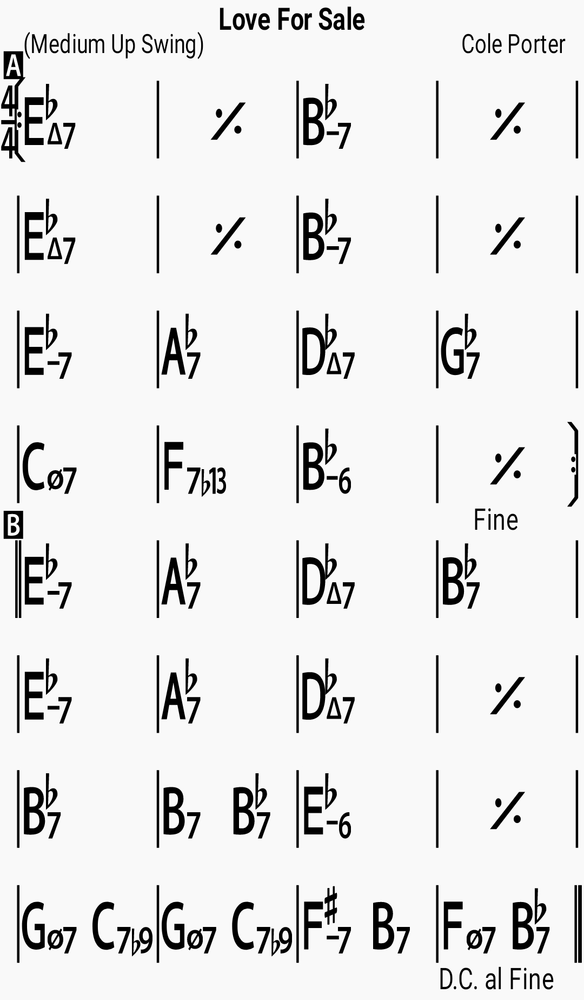

Chords

Lyrics
Love for sale Appetising young love for sale Love that's fresh and still unspoiled Love that's only slightly soiled Love for sale Who will buy? Who would like to sample my supply? Who's prepared to pay the price For a trip to paradise? If you want the thrill of love I've been through the mill of love Old love, new love Every love but true love Love for sale Appetising young love for sale If you want to buy my wares Follow me and climb the stairs Love for sale